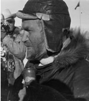

Sir Vivian's life as an explorer began in the tropical East African Rift Valley, as a graduate of geology at the University of Cambridge.

In 1958 Sir Vivian Fuchs made history when he successfully completed the
first crossing of the Antarctic via the South Pole. This epic journey captured
the imagination of the world and it is for this expedition that he is most
popularly remembered.